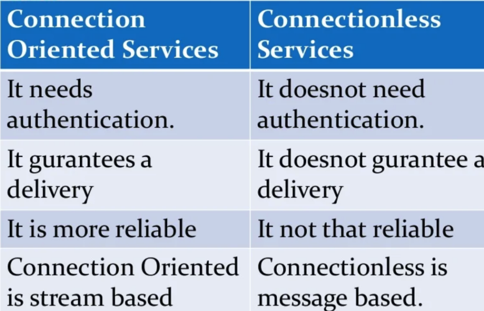
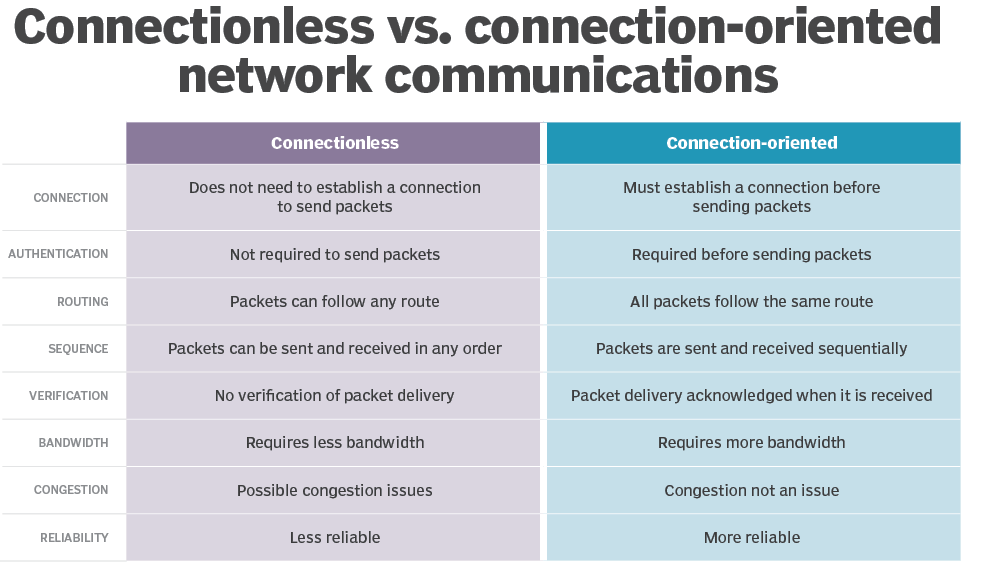
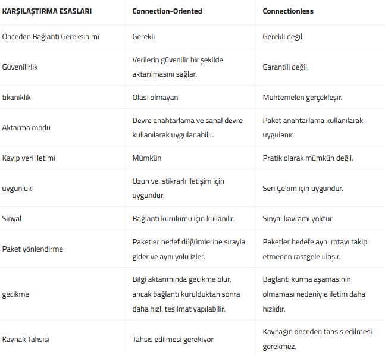

connection-oriented & connectionless
Difference between connection-oriented and connectionless
In connection-oriented service, Handshake method is used to establish the connection between sender and receiver. Connection-less service is related to the postal system. It does not include any connection establishment and connection termination.
Connection-less
Service does
not
give the
guarantee
of reliability. (Bağlantı odaklı hizmette, gönderici ve alıcı arasındaki bağlantıyı kurmak için El Sıkışma yöntemi kullanılır. Bağlantısız hizmet posta sistemi ile ilgilidir. Herhangi bir bağlantı kurulmasını ve bağlantı kesilmesini içermez. Bağlantısız Hizmet, güvenilirlik garantisi vermez)
IP protocol is connectionless
in that all packets in IP network are routed independently, they may not necessarily go through the same route, while in a virtual circuit network which is connection oriented, all packets go through the same route. This single route is what 'virtual circuit' means.
NOT
: IP
connectionless
protocol
dür

 Connection-oriented
Connection-oriented, uç noktalardaki cihazların herhangi bir veri gönderilmeden önce uçtan uca bağlantı kurmak için bir ön protokol kullandıkları verileri iletmenin bir yoludur. Telekomünikasyonda, connection-oriented servisler çoğunlukla “güvenilir ağ hizmeti” olarak tanımlanır, çünkü veri akışları / paketleri alıcıya gönderen tarafından gönderildikleri sırayla gönderilir.
Connectionless
Connectionless servisler, gönderenin hedefe bağlantı kurmadan hedefine veri paketleri gönderdiği iki terminal arasında veri iletişimini iletmenin bir yoludur. Conenctionsless sistemlere iyi bir örnek LAN’lardır. LAN’lar, her bilgisayarın ağa erişir erişmez veri paketlerini iletmesini sağlar. Telekomünikasyonda, connectioness protokoller genellikle stateless olarak tanımlanır, çünkü uç noktaların mesaj alışverişlerinde nerede olduklarını hatırlamak için protokol tanımlı bir yolu yoktur.
